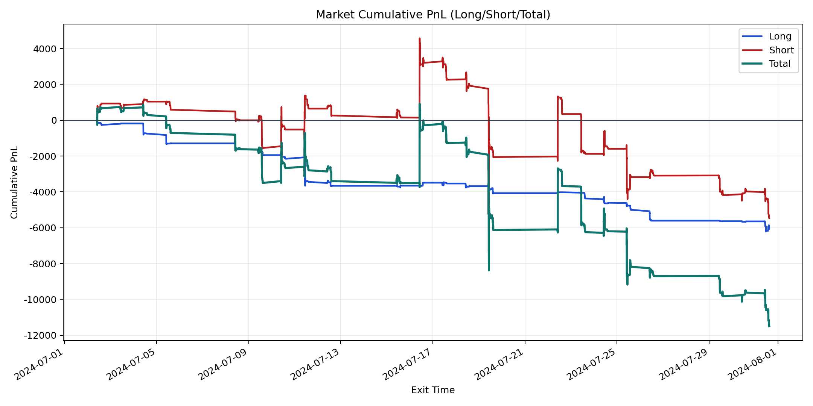
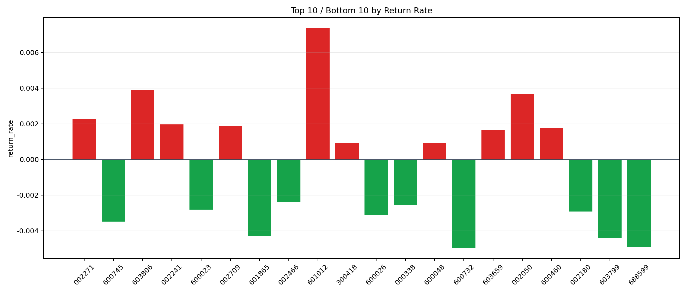

| repo_root | /home/haoranyou/data/output/alpha0.4_1w_5s_3ticks_index_filter/index_weights_300 |
|---|---|
| period_months | 1 |
| period_label | 2024-07-02_to_2024-07-31 |
| start_time | 2024-07-02 09:54:07 |
| end_time | 2024-07-31 14:40:27 |
| n_trades | 2660 |
| n_symbols | 43 |
| total_pnl | -11492.216250000038 |
| long_total_pnl | -6027.368249999992 |
| short_total_pnl | -5464.84800000005 |
| total_entry_notional | 24280286.0 |
| long_entry_notional | 4687312.0 |
| short_entry_notional | 19592974.0 |
| total_return_rate | -0.0004733146985995156 |
| long_return_rate | -0.0012858901327669231 |
| short_return_rate | -0.0002789187593471032 |
| top_symbols_by_return | ["601012", "603806", "002050", "002271", "002241", "002709", "600460", "603659", "600048", "300418"] |
| bottom_symbols_by_return | ["600732", "688599", "603799", "601865", "600745", "600026", "002180", "600023", "000338", "002466"] |

